- Overview
- Trigger Timing
- Case Variables
- System Variables in Triggers
- Operators
- Terminating Statements
- Examples
- Creating Custom Triggers
- Trigger Wizard
- Copy/Import Triggers From a Process
- Inserting a Trigger in a Process
- Debugging Triggers
- Enabling Debug Mode
- Using the ProcessMaker Debugger
- Viewing Error Messages
- Examining Normal PHP Variables
- Error Management
- Error Management for Processes in Production
- Preventing Halts in Trigger Execution
- Exiting from the Middle of Trigger Code
- Variable Storage
- Browser Redirection
Overview
A trigger is a piece of PHP code that can be inserted into a process. Triggers provide the appropriate framework to perform complex calculations and add additional functionality to processes.
A ProcessMaker trigger is parsed like a PHP script, so normal PHP variables and functions can used inside triggers, as well as ProcessMaker's case variables, system variables and its custom functions. PHP libraries can also be imported into ProcessMaker triggers with the require_once() function. With access to the PHP language and its libraries, a great deal of functionality can be added to a trigger.
Trigger Timing
Triggers can be fired at many points during the process:
- Before a step is executed (i.e., DynaForms, Input Documents and Output Documents).
- After a step is executed.
- Before a user is assigned (designated) to work on the next task is the process.
- Before a case is derived (routed) to the next task in the process.
- After a case is derived (routed) to the next task in the process.
For example, a process whose first task contains a DynaForm step and an Input Document step would have triggers fired in the following order:
- DynaForm step
- After step trigger
- Before step trigger
- Input Document step
- After step trigger
- Before assignment trigger
- Assignment of user for next task
- Before derivation trigger
- Derivation to next task
- After derivation trigger
When to set Triggers to Fire
| If the step is a DynaForm, this is a good point to set any case variables which will be displayed in the DynaForm's fields. If the step is an Output Document, then case variables can be set which are used in the Output Document's template. | |
| After a DynaForm step, the data from the DynaForm's fields exists as case variables, but it hasn't yet been submitted to the database and any files uploaded to File fields have not yet been saved to the file system. This a good point to alter the data before it gets submitted.
Warning: Due to this bug, if the trigger's execution is halted due to an error, warning or the die() function, then the DynaForm data won't be saved. Solved in version 2.0.45 Warning: Due to this change, triggers are not executed after DynaForm steps, if the DynaForm's data isn't saved (i.e., either a submit button was clicked or the Save and Continue option is selected for the Next Step Link property). To work around this problem, set the trigger to fire before the next step (or before assignment if the last step in the task). Warning: When a trigger is assigned to be executed after an Input Document step, the trigger is executed before the file is save and processed. This problem is solved in version 2.5.2 and later. | |
| If the next task in the process uses Value Based Assignment, this is a good point to set the variable used to determine the next user. Note that before assignment triggers will always fire, even in final tasks when there is no user assignment for the next task.
Warning: PMFDerivateCase() function is not executed before assignment. To work around this problem, set the trigger after the last step. |
|
| This is a good point to set any variables used by conditions in the next routing rule. | |
| At this point, the record for the next task has already been written to the database in the wf_<WORKSPACE>.APP_DELEGATION table, so it can be consulted with database queries. Before this point, the next task and the next user can not be known for sure. |
Case Variables
In addition to normal PHP variables, triggers can use case variables, which are special variables which hold information about a ProcessMaker case and are only valid while that case is running. Every field in a DynaForm which holds data, such as textboxes, checkboxes, dropdown boxes and grid objects, have an associated case variable with the same name to hold the values entered into that field. When a user clicks a "Submit" button in a DynaForm (or when a user clicks the Next Step link if the "Save and Continue" option is selected for the DynaForm), a case variable is automatically created for each field with the entered data as its value.
Not only can triggers access case variables defined by DynaForms, they can also define additional case variables. If a subsequent DynaForm in the case has a field of the same name as the case variable, it will automatically use the value stored in the case variable.
For instance, a trigger could define the case variable @@ApplicationDate and store the current date in it. A subsequent DynaForm containing the field "ApplicationDate" would display that date. The user could alter the date in the DynaForm, which would then change the value stored in the case variable @@ApplicationDate. A subsequent trigger could examine @@ApplicationDate and make calculations based on that date.
Case variables are defined like normal PHP variables, except they use @@, @%, @#, @?, @$ and @= instead of $ to identify them. For example:
Where:
Note that case variables only have scope when their case is open. To create global variables which can be accessed by any case, use this workaround.
Typing rules for Case Variables
When referencing a case variable within a trigger, take into account the following rules:
- @@variable_name
The variable will be parsed as string type. If originally another type, it will be converted to a string. So -1, 0 and 12.45 become "-1", "0" and "12.45", respectively. - @%variable_name
The variable will be parsed as integer type (a whole number). If originally another type, it will be converted to an integer. A real number will be converted to a whole number, so12.45becomes12. A string which contains numbers will be converted to a whole number, so"655"and"34.19"become655and34, respectively. - @#variable_name
The variable will be parsed as float type (a real number with decimals). - @?variable_name
The variable will be parsed as a string used in a URL. The string is transformed with PHP's encodeurl(), so all spaces become pluses (+) and all characters which aren't letters, except underscores (_), are replaced by a%followed by a 2 hexadecimal digits, so that the string can be used in posted data to/from WWW forms. - @$variable_name
The variable will be parsed as a string for use in an SQL query. Any single quotation marks (') will be preceded by a backslash. So "I'm telling you it's a boy!" becomes "I\'m telling you it\'s a boy!". - @=variable_name
The variable will not be changed and is parsed as its original type. Always use this when referencing objects and arrays.
For example, this statement uses 3 case variables which are parsed as an integer, its original type and a string, respectively.
Where:
- any_number could be a number from a text field in a DynaForm; this will be parsed like an integer value.
- age could be a field in any DynaForm, but it's type will not be transformed.
Type transformation of case variables only happens when the variable is an R-value, which means that it is what is on the right-hand side of an assignment statement and is what is assigned from:
If a case variable is a L-value or is what is assigned to, no type transformation happens. For example:
$a = @@b; //R-value, so transformed to string before assignment
@#c = "40.0"; //@#c is a L-value, so assigned a string and no type transformation
@@d = 40.0; //@#d is a L-value, so assigned a float and no type transformation
It is important to note that variable_name follows the PHP rules for variable names definition. That means a valid case variable name in ProcessMaker starts with a letter or underscore, followed by any number of letters, numbers, or underscores. Case variables are case sensitive, so @@myvar, @@MyVar and @@MYVAR are three different variables. If passing values between triggers and DynaForms, make sure that the case variable name in the trigger is spelled the same as the field name in the DynaForm. ProcessMaker case variables are stored separately from normal PHP variables, so a trigger with $myVar and @@myVar would have two different variables.
ProcessMaker retains the original value of case variables as normal PHP variables, so they not altered by using the different transformation rules. For instance:
$sum = 5 + @%MyVar; # Use MyVar as the integer 22
$str = "Sum: " . @@MyVar; # Use MyVar as the string "22.345"
# @=MyVar still equals its original value of 22.345
$total = @=MyVar + 1; # $total equals 23.345
ProcessMaker case variables can not be inserted into strings like normal PHP variables. The following statement will NOT work:
To insert case variables in a string, either reassign them to normal PHP variables and insert them:
$my_age = @%MyAge;
$str = "My name is $my_name and my age is $my_age.\n";
Or use the dot operator (.) to concatenate strings with case variables:
Note: ProcessMaker does NOT support the following assignment:
System Variables in Triggers
In addition to case variables, triggers can also use system variables, which are predefined variables which have the same syntax as case variables and hold information about the current ProcessMaker system.
ProcessMaker has the following system variables:
| Variable Name | Variable Description |
|---|---|
| @@SYS_LANG | Current system language in two letter [http://en.wikipedia.org/wiki/ISO_639-1 ISO 639-code, which by default is "en" (English). |
| @@SYS_SKIN | Current system skin, which by default is "green" in ProcessMaker 1.X and "classic" in ProcessMaker 2.0. |
| @@SYS_SYS | Current workspace name, which by default is "workflow". |
| @@PROCESS | Current process UID. |
| @@TASK | Current task UID. |
| @@APPLICATION | Current case UID. |
| @@APP_NUMBER | Current case number. |
| @@USER_LOGGED | UID of the current user. |
| @@USR_USERNAME | Username of the current user. |
| @%INDEX | The delegation index number, which is a positive integer which counts tasks in a process, starting from 1. If multiple tasks are operating in parallel, then each task will have a different index number. |
| @@PIN | The 4 character PIN, which can be used to access information about the case without being a registered user at:http://{IP-ADDRESS}:{PORT}/sys{WORKSPACE}/{LANG}/{SKIN}/tracker/login |
| @@__ERROR__ | If a ProcessMaker error occurs, this system variable will be created, containing the error message. Note that this system variable only exists after a ProcessMaker exception occurs. It will not be created by syntax errors in PHP or JavaScript or by errors which ProcessMaker doesn't know how to handle. |
Note: UID stands for "unique identification" which is a string of 32 hexadecimal characters to identify objects in ProcessMaker. To find the UIDs for processes, tasks, cases, users, groups, etc., see Consulting the ProcessMaker databases.
Operators
Operators in ProcessMaker triggers are handled like the PHP language.
@#a - @#b Subtraction
@#a * @#b Multiplication
@#a / @#b Division
@#a % @#b Modulus (Remainder)
@@a . @@b String concatenation
Terminating Statements
A statement in a ProcessMaker trigger can extend for multiple lines. All statements should terminate with a ";" (semicolon) to indicate where the statement ends.
@@query = "SELECT CLIENT_NAME, CLIENT_ID, CLIENT_STATUS " .
"FROM CLIENTS_TABLE WHERE CLIENT_MAX_CREDIT > " . @#CreditLimit;
Examples
- Trigger 1: Get the information of the logged user and assign these values to the @@issueOwner case variable.
@@issueOwner = @@Data['firstname'] . ' ' . @@Data['lastname'];
- Trigger 2: Get the current date and time and assign the values to the @@issueDate case variable.
@@aTime = getCurrentTime();
@@issueDate = @@aDate . " " . @@aTime;
- Trigger 3: Execute a SQL and assign the values to cases variables @@issueDesc1 and @@issueDesc1.
@@issueDesc1 = @@Data[1]['DESC'];
@@issueDesc2 = @@Data[1]['DESC2'];
Creating Custom Triggers
To create a custom PHP trigger, open the list of triggers, by going to PROCESS > TRIGGER and click on the New link, to create a new trigger. Select Custom Trigger as the image below:

Then, the following editor will open:
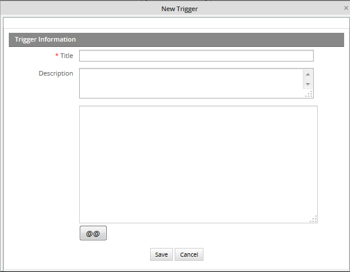
Where:
Title:Add a descriptive title for the trigger.
Description:Enter a description about the Trigger, which should inform the user what is the general content or purpose of the trigger.
On the text area field add the trigger code, it is possible to insert system or case variables by clicking on the @@ variable picker.
On the following example, the trigger created will obtain the user and date, and they will display in the Dynaform, in a field called TASK_DATE and USER_NAME respectively.

If you're running version 2.5.2, when creating triggers, you will only need to fill out the name and description, and not the code anymore, this because a new enhancement was incorporated in the edition of triggers.
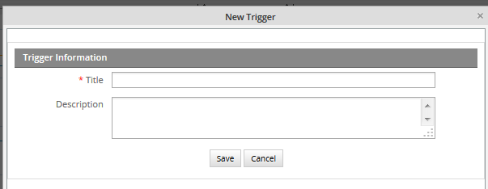
When editing it, this new editor, releases in an earlier version (2.5.1), will open in a new popup window.
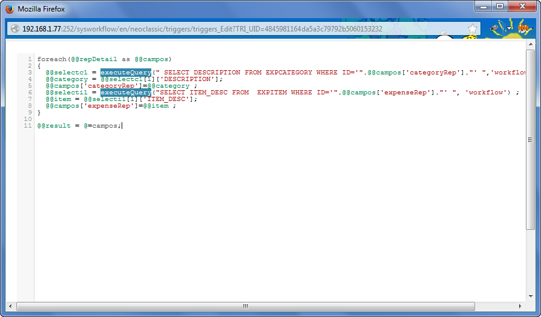
As follows you will see its improvements:
- A re-sizable window, which means you can adjust it the size you need. Just place the mouse in any corner of the window and a double arrow will display.
- Horizontal and Vertical scrolls don't disappear when long code is introduced. (Issue found in version 2.5.1 in IE v 8 and 9)
- Indentation added in the first column.
- More space to create long triggers.
Getting the function list
Available Version: 2.5.1
Usually, it is difficult to remember functions and sentences to be used in ProcessMaker. The trigger editor in version 2.5.1 and later has added a list of ProcessMaker functions and standard PHP elements to be inserted while a trigger is being edited. Press Ctrl + Space in the trigger editor, see function list and select one to insert:
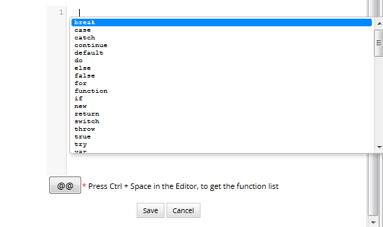
Double click on one of the functions in the list to have it inserted in the trigger editor.
Moreover, if you remember the PM function you want to use, but not its parameters, look for it in the editor. For example, the parameters of the PMFSendMessage() function can be shown:
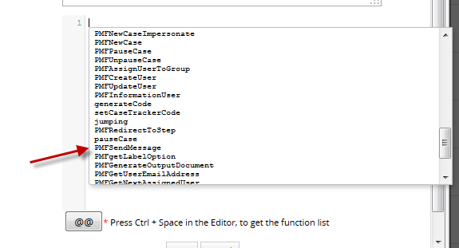
Press Ctrl + Space once more to list all parameters (required and not required) available for this specific function:
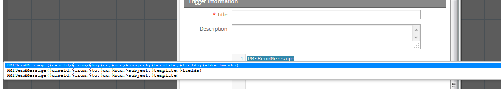
Double click on the parameters you will use to have the function added in the editor:

Syntax Highlighting
Available Version: 2.5.1
Version 2.5.1 and later includes the CodeMirror text editor which shows syntax highlighting when editing trigger code. Case and process Variables as well as conditions have their own color, which helps to identify any errors in the code.
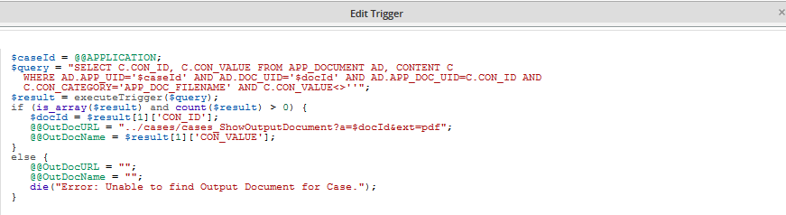
CodeMirror text editor also shows the line numbers. In addition, it has automatic indentation to make code easier to read. Those improvements will help programmers to make their code understandable and easier to debug.

Trigger Wizard
ProcessMaker provides a user-friendly Trigger Wizard to easily create triggers using ProcessMaker functions (or functions provided by plugins) without doing any PHP programming. The Trigger Wizard is designed to help process designers who don't know the PHP syntax, but still want to be create triggers which call a single ProcessMaker function. For each function, the Wizard displays a dialog box to input each parameter for the function and enter a variable to store the return value from the function.
Creating a Trigger with the Wizard
Open the list of triggers, by going to DESIGNER > TRIGGER and click on the New link, to create a new trigger. Find the type of function that will be called by the new trigger, such as ProcessMaker Functions or Sugar CRM Functions and click on [+] to expand its list. Then, select the specific function to use from the list.
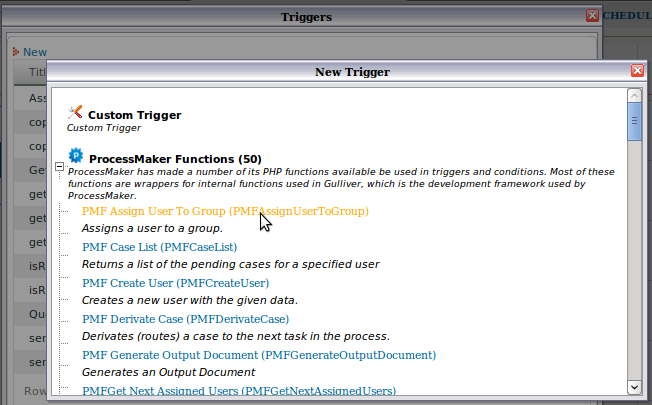
After selecting the function, a dialog box will appear to define the properties of the trigger and the parameters of the function to be called by the trigger.

A header describes the general purpose of the specific ProcessMaker function and provides a (More info) link where the function is described in the ProcessMaker wiki.
Details
In this section, define the properties of the new trigger:
- Title: Enter a label to identify the Trigger.
- Description: Enter a description about the Trigger, which should inform the user what is the general content or purpose of the trigger.
Parameters
Enter the parameters for the specific function that will be called. For each parameter, enter a value which can be:
- A case variable, such as @#AccountTotal or @@departmentName. Use the [@@] button to select a case variable. Although PHP should automatically convert to the correct variable type, it is a good idea to use the correct variable type (@@, @#, @%, @?, @$ or @=) called for by the function. For arrays and objects, use @=variable-name.
- A system variable, such as @@APPLICATION, or @%INDEX. Use the [@@] button to select a system variable.
- A literal value, such as 644 (an integer), -2999.85 (a floating-point number), Finance Department (a string), or 447CEAF7BE6AEB747CEB6EB5526B (a ProcessMaker unique ID). If the parameter type is a string, ProcessMaker will automatically enclose it in single quotation marks. If the string contains a single quotation mark ('), escape it with a backslash. For example: Don\'t say \'hello\'
A new variable picker was added from version 2.5, since a new WYSIWYG HTML Editor was also included.
If a string parameter needs to use a PHP variable such as $myVar, reference a PHP superglobal array such as $_SERVER['SERVER_ADDR'], do operations with multiple variables such as @@FirstName . @@LastName, or make a function call such as getCurrentDate(), then edit the trigger's source code after using the Trigger Wizard.
Return value
- Variable to hold return value: Optional. Enter the name of the variable which will store the return value of the function. This can be a normal PHP variable such as $result or a case variable such as @#result. If the variable does not already exist, it will be automatically created when the trigger fires. In general, it is a good idea to use a case variable which has persistent storage, because it's value can be checked in the trigger debugger, it can be referenced in a subsequent trigger, and it can be displayed in a subsequent DynaForm field which has the same name.
After defining the properties the trigger, click on Save. Then, insert the new trigger into the process where it will be fired when running cases.
Editing Triggers Created by the Wizard
After a trigger has been created by the Trigger Wizard, it can be edited by going to PROCESS > TRIGGERS and clicking on the Edit link for the particular trigger. A dialog box will appear to redefine the properties of the trigger.
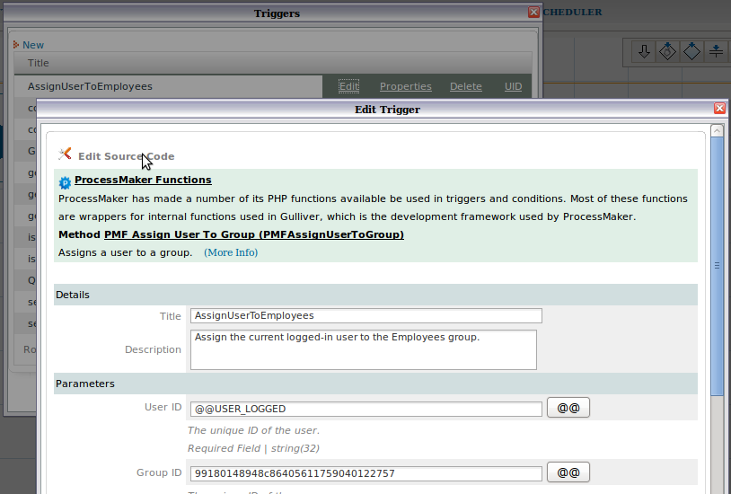
Enter new properties or parameters for the trigger and click on Save. To directly edit the source code for the trigger, click on the Edit Source Code link at the top, which will open the source code in a plain text editor.
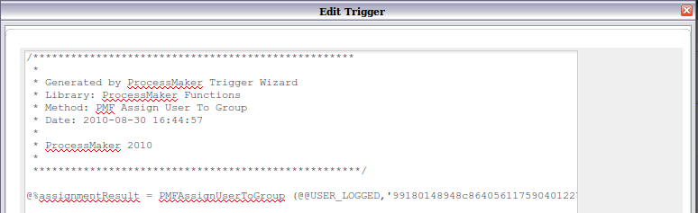
After editing the source code, the trigger can no longer be edited with the graphical wizard interface in the future, so only use this option if necessary.
Copy/Import Triggers From a Process
Available Version: 2.5
Often sub-processes need the same triggers as the main process, or reuse a trigger used on a different process located at the same workspace, to avoid doing this manually. To reuse a trigger from a different process located in the same workspace, select the option to Copy/import Triggers from a process, then go to the Trigger Wizard, click on New < Import/Copy Trigger from a Process:
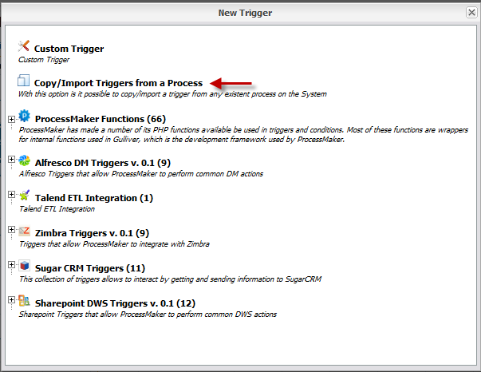
By clicking on this option, a new window will display with the following Trigger Information to be filled:
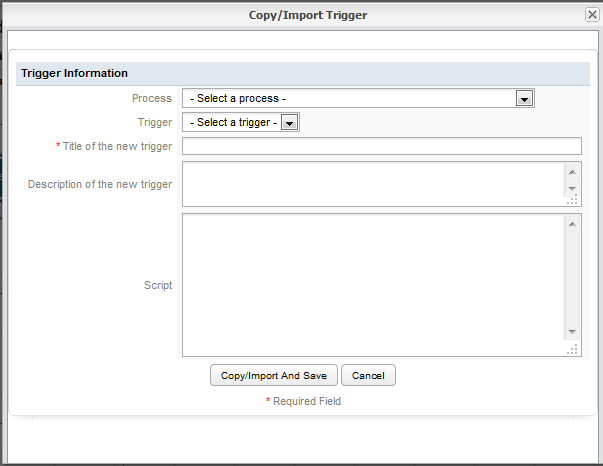
Where:
- Process: Available processes created on the current workspace will be listed.
- Trigger: Available triggers created on the process selected before will be listed. The trigger which code will be copied must be selected.
- Title of the trigger: Give the trigger a title for the current process.
- Description of the new trigger: Give a brief description of what the trigger is about.
- Script: Once the trigger is imported, its code will be included in this section. Edit it if necessary.
For example:
Copying a trigger from a Sub-process:
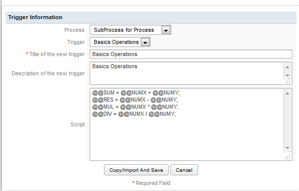
Click on Copy/Import and Save to have the trigger copied and added on the trigger list:
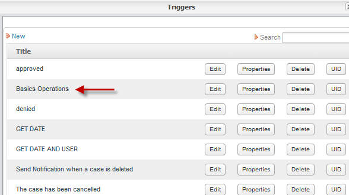
Inserting a Trigger in a Process
After creating a trigger, it can be inserted at various points in a process. Login to ProcessMaker as a user such as "admin" who has the PM_FACTORY permission in his/her role. Then, open a process for editing.
- In the process map, right click on the task where the trigger will be fired and select the Steps option from the dropdown menu.
- 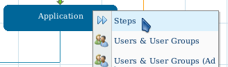
- Select the Triggers tab in the "Steps of:" dialog box which appears.
- 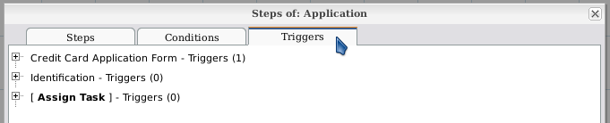
- Click on [+] to expand the structure and find the timing where the trigger will be inserted.

- Click the Add link.
- 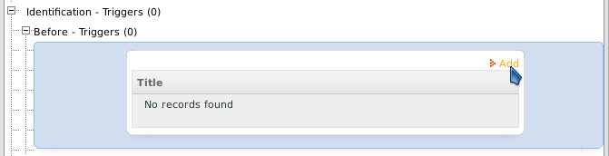
Firing Triggers Based on Conditions
Select a Trigger from the dropdown box of available Triggers. If only wanting the trigger to fire in certain situations, enter a condition that must evaluate to true in order for the trigger to be fired. Use the [@@] button to insert system and case variables in the condition. If left blank, the trigger will always fire. Then, click the Assign link to add the trigger.
- 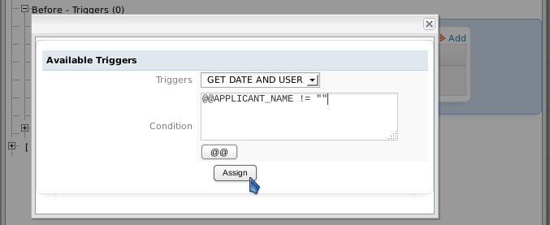
Now the trigger should appear in the list of triggers to fire. Multiple triggers can be added to the list. The order which they fire can be changed by clicking on the Up and Down buttons.
- 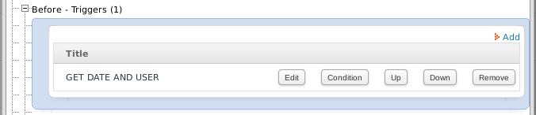
In version 2.8.0 and later, a green check mark will appear for triggers which have defined conditions. This visual clue reminds process designers which triggers have defined conditions, which is helpful when trying to figure out why a trigger did not fire:
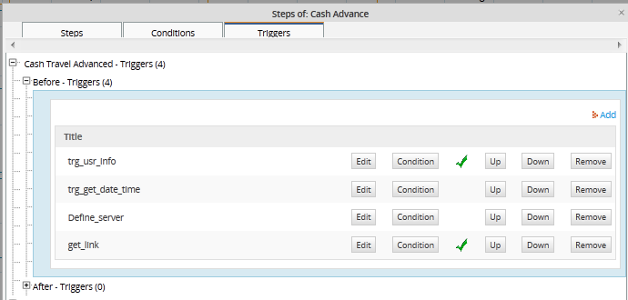
Debugging Triggers
When running cases, it is possible to see when triggers are executed and the value of system and case variables by turning on the ProcessMaker Debugger.
Enabling Debug Mode
There are two ways to enable Debug Mode, so the ProcessMaker Debugger will be displayed in a left sidebar while running cases for a particular process.
Login to ProcessMaker with a user such as "admin" who has the PM_FACTORY permission in his/her role. Then, go to the DESIGN menu. Right click on a process in the list and select the Énable Debug Mode option from the dropdown menu.
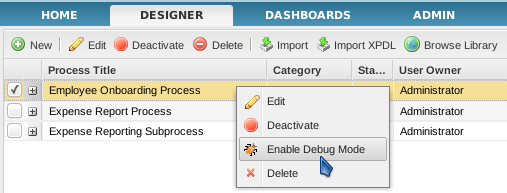
Debug Mode can also be enabled while editing a process. Right click on a blank area in the Process Map and select the option Edit Process from the menu.
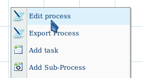
In the Properties dialog box, mark the Debug checkbox:

Using the ProcessMaker Debugger
To use the ProcessMaker Debugger, run a case for a process which has enabled Debug Mode. The ProcessMaker Debugger will appear in a left-hand sidebar to view the system and case variables and see the code of the triggers that have just been executed.
The Variables tab shows the values of the system variables and the case variables for the currently open case. Each variable is displayed, along with its value. To see the content of long strings and arrays, click on a variable to see its value displayed in the box below.
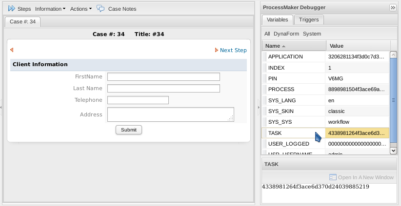
The list of variables can be filtered by clicking on the buttons at the top:
- All: Displays all system and case variables for the current case.
- DynaForm: Displays the case variables for the current case.
- System: Displays the system variables.
Note: The box below to display variable contents doesn't automatically refresh its contents, so click on the variable again to refresh the contents of the box.
The Triggers tab shows which triggers have just executed and whether they executed before or after the last step or routing. To see a particular trigger's code, click on the trigger and its code will be displayed in the box below.

To see a trigger's code in a separate window, click on the Open in a New Window.
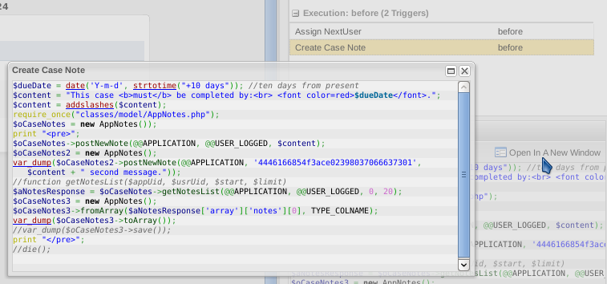
After each step, the Debugger will pause the case, so the variables and triggers can be examined in the Debugger. To continue running the case, click on the Continue button.
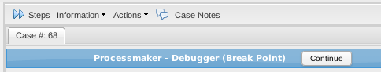
The Debugger will also pause after the task has been routed (derived), so the results of the triggers from before assignment, before derivation and after derivation can be examined.
Viewing Error Messages
If a fatal PHP error occurs in the trigger code when running a case, the case will stop and a PHP error message will be displayed in the cases frame:
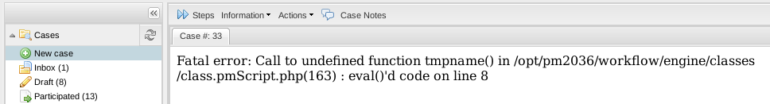
If a PHP warning or non-fatal error (such as a syntax error) occurs while executing a trigger, the execution of the trigger will stop and a message will be displayed at the top of the cases frame. Nonetheless, the execution of the case will continue, so the use can work on the next step in the task. These are the only types of error messages whose line numbers correspond to the line numbers of the trigger code.

If Ext JS (which is a JavaScript framework used by ProcessMaker) detects an error, it will also display error messages in a dialog box:
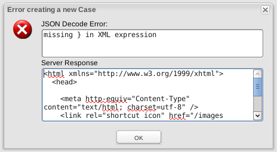
All of these types of errors are immediately obvious to the user running the case, however, ProcessMaker exceptions will not be displayed to the user when running a case. When a ProcessMaker exception occurs, the system variable @@__ERROR__ is created to store its error message.
The easiest way to detect these types of errors is to turn on the ProcessMaker Debugger and check if __ERROR__ appears in the sidebar when running cases. If it appears, click on the __ERROR__ variable to see its content in the box below:
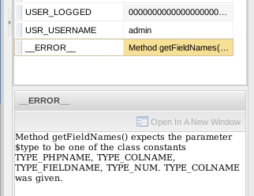
Examining Normal PHP Variables
It is often difficult to figure out what is the problem with trigger code, because the values of normal PHP variables can't be seen when running a case. If debugging code, it is recommended to assign normal PHP variables to case variables, so they can be seen with the ProcessMaker Debugger.
For example, if unable to figure out why a database query is failing, assign the result to a case variable so it can be seen in the Debugger:
If needing even more detailed information about a variable, the contents of variables can be displayed with var_dump() wrapped in <pre> tags:
If needing to force trigger execution to stop at a certain point, so variables can be displayed, then call die(). Be aware, however, that die() will stop the execution of the case from continuing onto the next step and will stop DynaForm data from being saved if called after a DynaForm step.
Error Management
Error Management for Processes in Production
Activating the ProcessMaker Debugger is a good way to detect errors when designing processes, however, it is not recommended when running cases in production. Not only is the debugger distracting for normal users, it also creates a potential security hole if users can see data entered by other users in the case.
Most of the time, bugs will be detected when designing the process, but some types of bugs are caused by unexpected user input or unanticipated circumstances such as a condition which contains a variable which didn't get defined because a step gets skipped. The most common source of these errors is unexpected user input which causes problems when querying the database in a dependent field or when a trigger calls executeQuery().
If needing to detect errors when a process is in production, it is recommended to add Triggers which check for the existence of the@@__ERROR__ variable, in order to display its message to users. Use the isset() function to detect whether the @@__ERROR__ variable exists and display the message to the user with die() or the G::SendMessageText() method. Then, remove the @@__ERROR__ variable with the unset() function, so it can be set again when the next ProcessMaker exception occurs.
For example:
The @@__ERROR__ variable will be stored as a case variable, so it will stay in the case if it isn't unset. Because it is persistent, it can be checked for several tasks later or at the end of a case.
It might also be a good idea to mail the exception's message to an administrator, so he/she knows that something is going wrong with the process.
For example, if using the following email template named "errorForm.html":
Time: @#time
Case: @#APPLICATION
Username: @#USR_USERNAME
Process ID: @#PROCESS
Task ID: @#TASK
Error Message: @#errorMessage
Then, the following trigger could mail this form to the system administrator with the PMFSendMessage() function when an exception occurs:
Alternatively, the error messages could be appended to a log file at shared/log/exceptions_log.txt with the file_put_contents() function:
$logFilePath = PATH_DATA . 'log' . PATH_SEP . 'exceptions_log.txt';
$content = "Datetime: " . getCurrentDate() . ' ' . getCurrentTime() .
"\nCase: " . @@APPLICATION . "\nUsername: " . @@USR_USERNAME .
"\nProcess: " . @@PROCESS . "\nTask: " . @@TASK . "\nError: " . @@__ERROR__ . "\n\n";
file_put_contents($logFilePath, $content, FILE_APPEND);
unset(@@__ERROR__);
}
Preventing Halts in Trigger Execution
In order to help process designers avoid problems in their code, the execution of trigger code will stop if a PHP warning or error occurs. If the trigger is fired after a DynaForm, a stop in trigger execution will also prevent the DynaForm's data from being saved. To prevent trigger execution from suddenly stopping, wrap the trigger code in a try block and then catch any exceptions in order to gracefully handle these situations.
//your trigger code here
}
//catch any exceptions:
catch(Exception $e) {
$g = new G();
$g->SendMessageText($e->getMessage(), 'ERROR');
}
Note: ProcessMaker contains a code which throws warnings because it is deprecated in PHP 5.3. If using PHP 5.3 and calling a ProcessMaker function which contains deprecated code, turn off the reporting of warnings with the error_reporting() function:
error_reporting(E_ERROR);
//your trigger code here
error_reporting($origSetting); //return to original setting
Exiting from the Middle of Trigger Code
ProcessMaker does not provide a good way to exit a trigger, except to come to the end of the code. The only way to exit the middle of a trigger is to provoke an error or call the die() function, which would prevent the execution of the next step in the process.
In order to write reliable code, it is a good idea to check for unexpected errors and provide a way to exit the trigger. Generally this involves writing long if then else blocks, which quickly become unwieldy if there are very many of them.
For example, a trigger which contains three database queries becomes quite difficult to manage:
if (is_array($result1) and count($result1) > 0) {
//some code for query1
$result2 = executeQuery("SELECT ...");
if (is_array($result2) and count($result2) > 0) {
//some code for query2
$result3 = executeQuery("SELECT ...");
if (is_array($result3) and count($result3) > 0) {
//some code for query3
}
else {
die("Error in query3");
}
}
else {
die("Error in query2");
}
}
else {
die("Error in query1");
}
Breaking up the code into functions doesn't help, because calling a function will only temporarily leave the middle of the code. Eventually the function has to return and there is still no easy way to exit. The best way to handle these situations is to use a programming anachronism, the [http://php.net/manual/en/control-structures.goto.php gotstatement. It is ugly, but it works.
For example:
if (!is_array($result1) or count($result1) < 1) {
$msg = "Error ...";
goto errorMsg;
}
//some code here
$result2 = executeQuery("SELECT ...");
if (!is_array($result2) or count($result2) < 1) {
$msg = "Error ...";
goto errorMsg;
}
//some more code here
$result3 = executeQuery("SELECT ...");
if (!is_array($result3) or count($result3) < 1) {
$msg = "Error ...";
goto errorMsg;
}
//some more code here
goto endScript:
errorMsg:
die($msg);
endScript:
Variable Storage
Case and system variables for each case are stored in the wf_<WORKSPACE>.APPLICATION.APP_DATA field in the database, which is a MySQL mediumtext field that can hold up to 16MB (224 bytes) of data.
The variables are stored in the APP_DATA field as an associative array which has been converted to a string by PHP's serialize() function. It has the following format:
The NAME-TYPE and VARIABLE-TYPE are almost always listed as type "s", which stands for string. For example:
If a DynaForm has a file field, the actual file is stored separately and only the filename (without its path) is stored as a case variable.
The data in the APP_DATA field is also stored as an associative array within the superglobal $_SESSION variable. In addition to the normal way of accessing case and system variables as @@variable, then can also be accessed as $_SESSION["APP_DATA"]["variable"] for the current case.
To get the system and case variables for any case, the APP_DATA field can be unserialized into an associative array of variable name and variable value pairs. For example, the following script looks up the current case's variables and outputs them into a string which can be displayed in a DynaForm field named "MyTextArea":
$result = executeQuery("SELECT APP_DATA FROM APPLICATION WHERE APP_NUMBER='$caseNo'");
if (is_array($result) and count($result) > 0) {
$sVars = $result[1]['APP_DATA'];
$aVars = unserialize($sVars);
@@MyTextArea = "";
foreach($aVars as $varName=>$varValue)
@@MyTextArea .= "$varName: $varValue\n";
}
The following script does the same thing, using ProcessMaker's Gulliver framework classes:
$result = executeQuery("SELECT APP_UID FROM APPLICATION WHERE APP_NUMBER='$caseNo'");
$caseUID = $result[1]['APP_UID'];
G::LoadClass('case');
$oCase = new Cases(); //Create a Cases object
$aCase = $oCase->loadCase($caseUID); //Load a particular case
$aVariables = $aCase['APP_DATA']; //Get the variables for that case
@@MyTextArea = "";
//Loop through the associative array, examining each variable
foreach ($aVariables as $varName => $varValue)
@@MyTextArea .= "$varName: $varValue\n";
If working with large values in triggers, it is recommended to use normal PHP variables rather than case variables due to their limited storage space. If persistent storage is needed, create a separate database to store the large values and manage the database with executeQuery(). Remember to serialize the variable before saving it to the database, especially if it isn't a string.
Note: The PHP language doesn't provide a reliable way to check the memory usage of a variable, but strlen(serialize(@=variable)) can also provide a rough idea of the memory size of a variable in bytes. If worried about exceeding the available memory limit of 16MB, see this example for how to check for memory usage of the APPLICATION.APP_DATA field.
Browser Redirection
Triggers can be used to redirect the web browser to a new page. Use the G::header() function to redirect the web browser to specified address. It is a wrapper for the standard header() function. Set its parameter to "location:" concatenated with the URL where the web browser should be redirected. For example:
To stop any normal processing after the trigger from occurring, it is a good idea to call the die() function after redirection to immediately kill the trigger.
If redirecting to an address inside ProcessMaker, it not necessary to include the full address. For example, to redirect back to ProcessMaker's cases list for the currently logged-in user, set the location to "cases_List".
In version 2.0, the new ExtJS interface can be used to display the cases list:
Version 2.0 uses multiple frames to display the ProcessMaker interface and cases are run within a child frame. To redirect to the cases list inside the parent frame use:
The G::header() function only redirects to a new address for the current frame. To redirect to the parent frame for any address, direct JavaScript code to the browser to redirect the parent frame. For example to redirect the parent frame to the login screen: